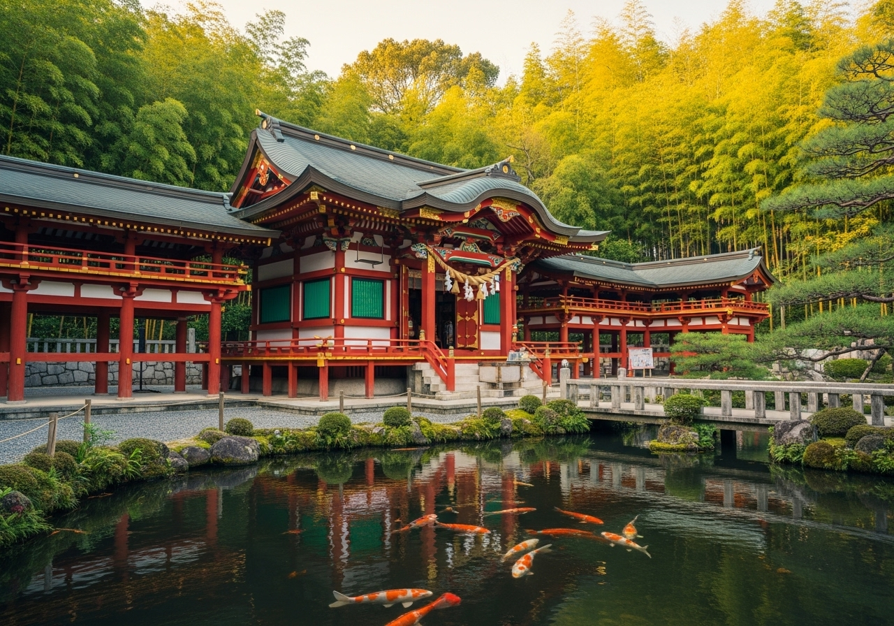

私たちのサービス
長年培った伝統技術と現代の技術を融合させ、社寺建築から一般建築まで、
お客様のご要望に応じた高品質なサービスをご提供いたします。
社寺建築・修繕
神社仏閣の新築から修繕まで、伝統工法を用いた本格的な社寺建築を手がけます。宮大工の技術を活かし、歴史ある建造物の価値を未来に継承します。
伝統工法による建築
継手や仕口などの伝統的な木組み技術を用いて、釘を使わない本格的な木造建築を実現。現代建築にも応用可能な高度な技術をご提供いたします。
庭園・造園設計
日本庭園の美学を取り入れた造園設計から施工まで。石組み、植栽、水景など、自然と調和した美しい空間をデザインいたします。
施工実績
奈良県内外で手がけた数々の社寺建築・修繕プロジェクトをご紹介いたします。
伝統技術と現代の要求を両立させた、格調高い仕上がりをご覧ください。
春日神社 本殿修繕
奈良市 | 2023年完成
江戸時代から続く歴史ある神社の本殿を、伝統工法により丁寧に修繕。屋根の葺き替えから木部の補修まで、文化財としての価値を保持しながら耐久性を向上させました。
興福寺 五重塔周辺整備
奈良市 | 2022年完成
世界遺産に登録される興福寺の五重塔周辺の環境整備を担当。参拝者の安全性と景観の調和を重視し、伝統的な石組みと植栽により美しい空間を創出しました。
伝統工法による住宅建築
生駒市 | 2023年完成
現代住宅に伝統工法を取り入れた新築プロジェクト。継手・仕口による木組み構造と現代の住環境を両立させ、長期にわたって住み継がれる住まいを実現しました。
お知らせ
最新の施工情報や会社からのお知らせをご覧いただけます。
2024.02.15
お知らせ
春日大社の修繕工事が完了いたしました
2024.02.01
採用情報
2024年度 新卒採用情報を公開いたしました
2024.01.20
お知らせ